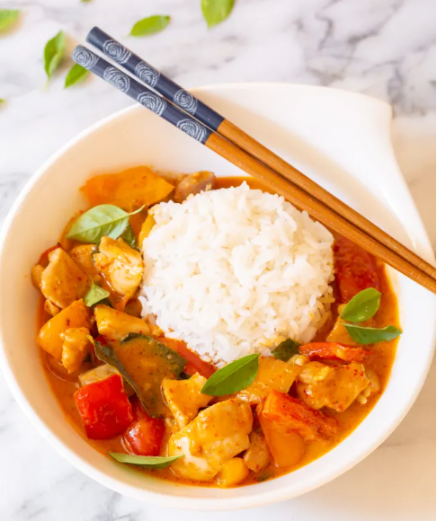

Thai Panang Curry

Description
Panang Curry with chicken and green peas in a rich and spicy coconut sauce. Served with white rice. Ready to eat in 20 minutes.
Ingredients
- 1 skinless/boneless chicken breast
- 1 TBSP oil
- 2 TBSP Panang curry paste
- 1/2 cup coconut milk
- 1/4 cup water
- 1 TS sugar
- 1 TBSP fish sauce
- 1/2 cup green peas
- 4-6 Kaffir lime leaves
Directions
- Heat up a pot with oil. Add in the Panang curry paste and stir until aromatic. Add in the chicken meat and blend well with the curry paste, then add in the green peas, coconut milk, kaffir lime leaves, water and the seasonings.
- Lower the heat to medium and let it simmer for 8-10 minutes. Serve hot with steamed white rice.